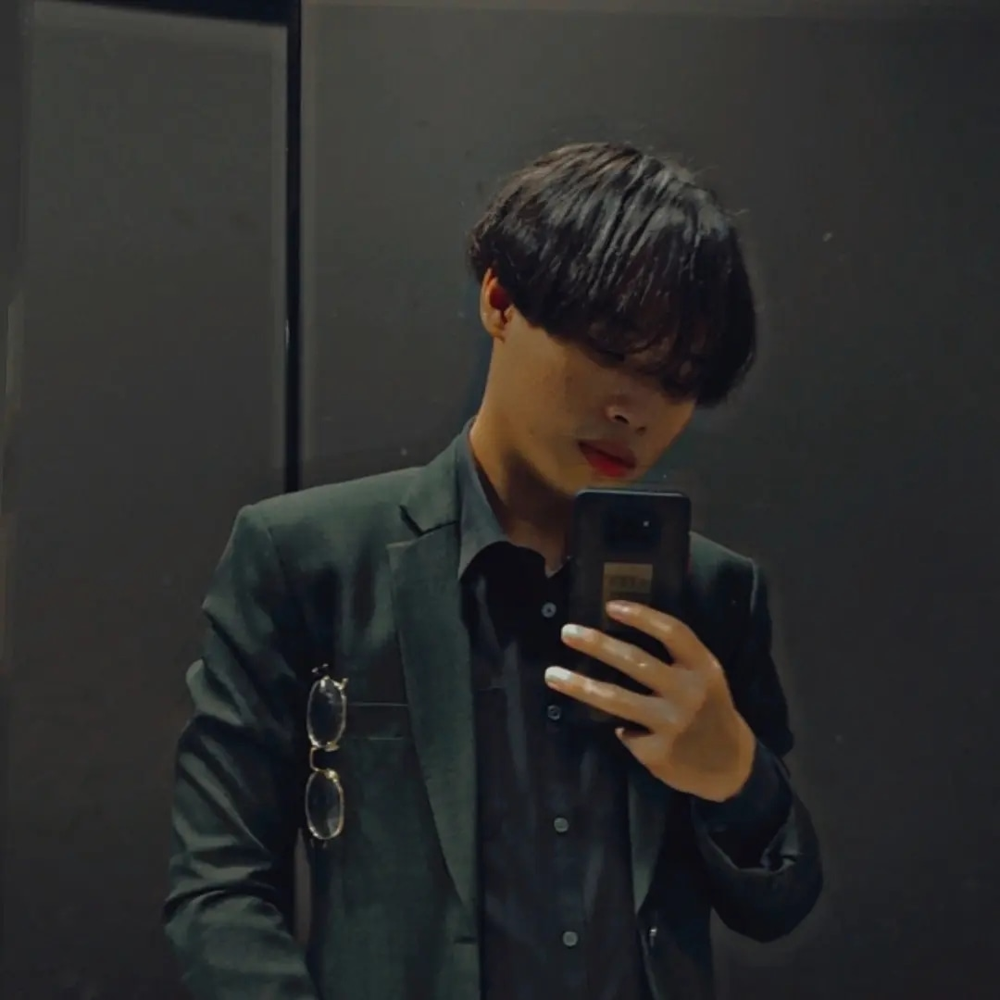

About Me
Greetings! I'm Aaron, a twenty-year-old individual currently pursuing my academic journey at the esteemed University Teknologi Malaysia. Embarking on this educational endeavor has been an enriching experience, allowing me to delve deep into various subjects and expand my horizons. Outside the academic realm, I find solace and excitement in a variety of hobbies. One of my passions is gaming, where I immerse myself in captivating virtual worlds, challenge my strategic thinking, and connect with friends online. Additionally, I have a keen interest in music production, where I channel my creativity into crafting melodic tunes and experimenting with different sounds. The process of composing and arranging music serves as both a form of expression and relaxation for me. Moreover, I have a strong affinity for coding, where I explore the intricate world of programming languages, algorithms, and software development. The ability to bring ideas to life through code fascinates me, and I constantly seek to enhance my skills and knowledge in this field. Balancing academics and hobbies can be challenging, but I find fulfillment in the diversity of experiences and the opportunity to continuously learn and grow. Whether I'm delving into complex algorithms, crafting beats in my home studio, or strategizing in a virtual battlefield, each endeavor contributes to my personal and intellectual development. In summary, my journey as Aaron encompasses not only academic pursuits at University Teknologi Malaysia but also a rich tapestry of interests and passions that shape my identity and enrich my life journey....